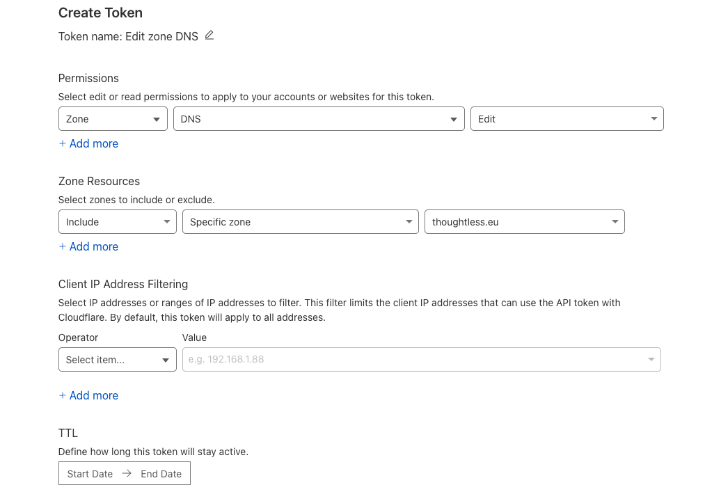

Expose applications securely with Cloudflare Tunnel
To avoid exposing services directly to the internet, we use Cloudflare Tunnel to securely expose them on few clusters (e.g. home that can't be accessed directly since port 80 and 443 are already used by another service).
Note that this is free in the Cloudflare plan, you only need to have a domain name managed by Cloudflare.
Cloudflare
Install cloudflared, this is the client that will create the tunnel between the cluster and Cloudflare. You can still use the web interface to create the tunnel, but it's easier to manage it with the CLI.
brew install cloudflared
cloudflared login # Login to your Cloudflare account
Create a tunnel with the CLI, note the ID of the tunnel that will be used later.
cloudflared tunnel create home-cluster
Tunnel credentials written to /Users/qjoly/.cloudflared/2f3b093d-bd57-4708-8d54-42723da21338.json. cloudflared chose this file based on where your origin certificate was found. Keep this file secret. To revoke these credentials, delete the tunnel.
Created tunnel home-cluster with id 2f3b093d-bd57-4708-8d54-42723da21338
By creating the tunnel, you obtain a JSON file with the credentials that will be used to authenticate the tunnel with Cloudflare, keep it safe and do not commit it to the repository (or encrypt it if you do, even if it's still not recommended).
kubectl create namespace cloudflare
kubectl create secret generic tunnel-credentials \
--from-file=credentials.json=/Users/qjoly/.cloudflared/2f3b093d-bd57-4708-8d54-42723da21338.json \
--namespace=cloudflare
Install the Cloudflare Tunnel Controller in the cloudflare namespace.
values.yaml
cloudflare:
tunnelName: "home-cluster"
tunnelId: "2f3b093d-bd57-4708-8d54-42723da21338"
secretName: "tunnel-credentials"
ingress:
- hostname: "*.ur-domain.com"
# Change the service name depending on the ingress controller used
service: "https://ingress-nginx-controller.kube-system.svc.cluster.local:443"
originRequest:
noTLSVerify: true
resources:
limits:
cpu: "100m"
memory: "128Mi"
requests:
cpu: "100m"
memory: "128Mi"
replicaCount: 1
helm repo add cloudflare https://cloudflare.github.io/helm-charts
helm repo update
helm upgrade --install cloudflare-tunnel cloudflare/cloudflare-tunnel \
--namespace cloudflare \
--values values.yaml
ArgoCD Application
apiVersion: argoproj.io/v1alpha1
kind: Application
metadata:
name: cloudflare-tunnel
namespace: argocd
spec:
project: default
source:
repoURL: https://cloudflare.github.io/helm-charts
chart: cloudflare-tunnel
targetRevision: 0.3.2
helm:
values: |
cloudflare:
tunnelName: "home-cluster"
tunnelId: "2f3b093d-bd57-4708-8d54-42723da21338"
secretName: "cloudflare-tunnel"
ingress:
- hostname: "*.thoughtless.eu"
service: "https://ingress-nginx-controller.ingress-nginx.svc.cluster.local:443"
originRequest:
noTLSVerify: true
resources:
limits:
cpu: "100m"
memory: "128Mi"
requests:
cpu: "100m"
memory: "128Mi"
replicaCount: 1
destination:
server: https://kubernetes.default.svc
namespace: cloudflare
syncPolicy:
automated:
prune: true
syncOptions:
- CreateNamespace=true
If you create a CNAME record in Cloudflare pointing to <tunnelId>.cfargotunnel.com, you can access the services on the cluster using the domain name (e.g. mine is 2f3b093d-bd57-4708-8d54-42723da21338.cfargotunnel.com)
External DNS
To automatically create DNS records in Cloudflare, we use External DNS. This will create a DNS record for each Ingress resource created in the cluster.
Create an API key in Cloudflare that can edit your DNS records of the domain (Zone) you configured in the Cloudflare

kubectl create ns external-dns
cat <<EOF | kubectl apply -f -
apiVersion: v1
stringData:
token: ${CF_API_TOKEN}
kind: Secret
metadata:
name: cloudflare-api-key
namespace: external-dns
type: Opaque
EOF
Then install External DNS with Helm.
helm repo add kubernetes-sigs https://kubernetes-sigs.github.io/external-dns/
helm repo update
helm upgrade --install external-dns kubernetes-sigs/external-dns \
--namespace external-dns \
--set sources[0]=ingress \
--set policy=sync \
--set provider.name=cloudflare \
--set env[0].name=CF_API_TOKEN \
--set env[0].valueFrom.secretKeyRef.name=cloudflare-api-key \
--set env[0].valueFrom.secretKeyRef.key=apiKey
Now, you can add annotations to your Ingress resources to automatically create DNS records in Cloudflare.
apiVersion: networking.k8s.io/v1
kind: Ingress
metadata:
annotations:
external-dns.alpha.kubernetes.io/cloudflare-proxied: "true"
external-dns.alpha.kubernetes.io/hostname: nginx.thoughtless.eu
external-dns.alpha.kubernetes.io/target: 2f3b093d-bd57-4708-8d54-42723da21338.cfargotunnel.com
name: nginx
namespace: default
spec:
ingressClassName: nginx
rules:
- host: nginx.thoughtless.eu
http:
paths:
- backend:
service:
name: nginx
port:
number: 80
path: /
pathType: Prefix
ArgoCD Application
---
apiVersion: argoproj.io/v1alpha1
kind: Application
metadata:
name: external-dns
namespace: argocd
annotations:
# Application is needed before the secret
argocd.argoproj.io/sync-wave: "-1"
spec:
project: default
source:
repoURL: https://kubernetes-sigs.github.io/external-dns/
chart: external-dns
targetRevision: 1.15.0
helm:
parameters:
- name: sources[0]
value: ingress
- name: policy
value: sync
- name: provider.name
value: cloudflare
- name: env[0].name
value: CF_API_TOKEN
- name: env[0].valueFrom.secretKeyRef.name
value: cloudflare-api-key
- name: env[0].valueFrom.secretKeyRef.key
value: apiKey
destination:
server: https://kubernetes.default.svc
namespace: external-dns
syncPolicy:
automated:
prune: true
syncOptions:
- CreateNamespace=true